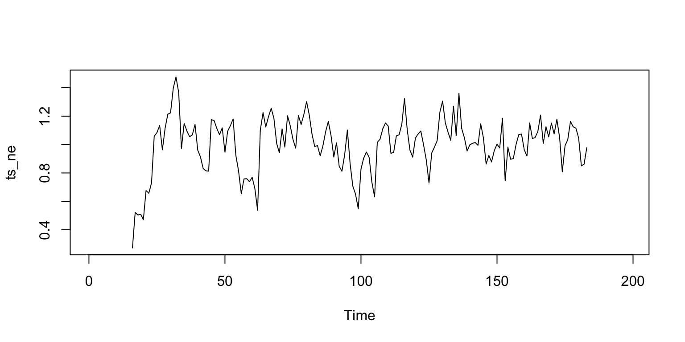

# 2 by 1par(mfrow =c(2, 1))plot(x = df_xts$region_deaths, main ="Daily Confirmed", xlab ="", ylab ="", type ="h",col =2, grid.col =0)plot(x = df_xts$region_confirmed, main ="Daily Confirmed", xlab ="", ylab ="",type ="h", col =1, grid.col =0)
Each country is assigned a unique country_fip. Counties with the same flip belong to the same state. Each state is assigned a unique state_fip: i.e.. Massachusetts has a state_fip of 25.
I first decomposed the time series to separate it into its separate components, which usually consist of a trend component and a random component, and a seasonal one, if there is.
Non-seasonal time series consist of a trend component and a random component.
Smoothing
some smoothing method, such as a simple moving average.
However, this would not allow us to quantify their impact. IN fact, merely smoothing it is more like adding ointment to a already not too bad model, but if the original time series is very noisy and very seasonal, then it is not a good idea to use smoothing.
Decomposing non-Seasonal Data
Trend
ts_ne <-ts(df_xts$region_confirmed)plot(ts_ne, main ="Confirmed Cases in New England", ylab ="Confirmed Cases", xlab ="",col =2)
Multiplicative In the case of COVID, for the time series only, they are somehow in separable.
Seasonally adjusted series contain the remainder component as well as the trend-cycle.
Therefore, they are not “smooth”, and “downturns” or “upturns” can be misleading.
plot.ts(ts_ne, col =1, lwd =1, main ="Confirmed Cases in New England", ylab ="Confirmed Cases",xlab ="Date")
# 7, 14, 21, 28for (i inc(7, 14, 21, 28)) {plot(ts_ne, col =1, lwd =1, main ="Confirmed Cases in New England", ylab ="Confirmed Cases",xlab ="Date") trend =ma(ts_ne, order = i, centre =TRUE)lines(trend, col =2, lwd =1)}
monthly_trend =ma(ts_ne, order =30, centre =TRUE)plot(as.ts(monthly_trend), col =2, lwd =1, main ="Confirmed Cases in New England",ylab ="Confirmed Cases", xlab ="Date")
The process here is the same as for the additive model. Airline passenger number seasonality also looks annual. However, it is recorded monthly, so we choose a moving average window of 12.
Multiplicative The process here is the same as for the additive model. Airline passenger number seasonality also looks annual. However, it is recorded monthly, so we choose a moving average window of 12. Multiplicative The process here is the same as for the additive model. Airline passenger number seasonality also looks annual. However, it is recorded monthly, so we choose a moving average window of 12.
Step 3: Detrend the Time Series
Removing the previously calculated trend from the time series will result into a new time series that clearly exposes seasonality
Therefore, I started with intentionally removing the seasonal component from the time series. Here common sense matters - weekly, monthly, quarterly, yearly. They are at least the way we think about time in daily life. It would hardly makes sense if i say, the time series is 3.5 days. So only monthly and weekly are reasonable. I did both, and since the data only spanned 6 months, I chose weeks as the frequency.
The order of the moving average determines the smoothness of the trend-cycle estimate. In general, a larger order means a smoother curve.
The variation due to seasonality is not of primary interest, the seasonally adjusted series can be useful.
An increase in unemployment due to school leavers seeking work is seasonal variation, while an increase in unemployment due to an economic recession is non-seasonal.
detrend = ts_ne/monthly_trendplot(as.ts(detrend))
Average the Seasonality
Removing the previously calculated trend from the time series will result into a new time series that clearly exposes seasonality.
From the detrended time series, it’s easy to compute the average seasonality. We add the seasonality together and divide by the seasonality period. Technically speaking, to average together the time series we feed the time series into a matrix. Then, we transform the matrix so each column contains elements of the same period (same day, same month, same quarter, etc…). Finally, we compute the mean of each column. Here is how to do it in R:
random = ts_ne/(monthly_trend * weekly_seasonality)plot(as.ts(random))

Reconstruct the Original Signal
The decomposed time series can logically be recomposed using the model formula to reproduce the original signal. Some data points will be missing at the beginning and the end of the reconstructed time series, due to the moving average windows which must consume some data before producing average data points.
Multiplicative The only requirement: seasonality is monthly (frequency = 12)
par(mfrow =c(2, 2), mar =c(2, 2, 2, 2), xlabs ="", ylabs ="")ts_ne =ts(ts_ne, frequency =30)decomp =decompose(ts_ne, "multiplicative")plot(as.ts(ts_ne), col =2, lwd =1, main ="Original Time Series")plot(as.ts(decomp$seasonal), col =1, lwd =1, main ="Seasonality")plot(as.ts(decomp$trend), col =1, lwd =1, main ="Trend")plot(as.ts(decomp$random), col =1, lwd =1, main ="Random")
Conclusion Decomposition is often used to remove the seasonal effect from a time series. It provides a cleaner way to understand trends. For instance, lower ice cream sales during winter don’t necessarily mean a company is performing poorly. To know whether or not this is the case, we need to remove the seasonality from the time series. Here, at Anomaly.io we detect anomalies, and we use seasonally adjusted time series to do so. We also use the random (also call remainder) time series from the decomposed time series to detect anomalies and outliers.
# square figure sizepar(mfrow =c(1, 1), mar =c(4, 2, 2, 4), xlabs ="", ylabs ="")plot(decomp, col =1, lwd =1)